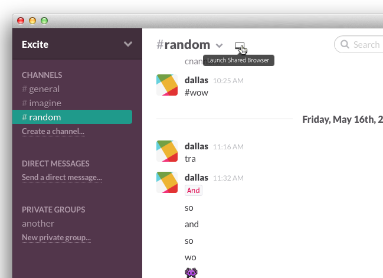
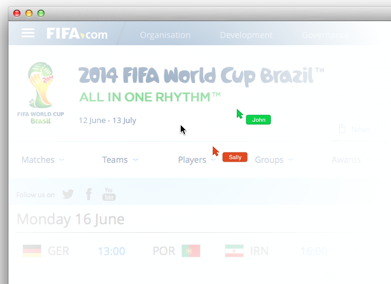

Dallas Read Cole Harbour, NS June 16, 2014
Dear Slack, It's happened to all of us. You're in a Slack chat and want to explain something, but it can't be put into words. Maybe you want to show your coworker a newly-designed feature. Maybe you want to show a bug that keeps appearing. Sometimes, a screenshot is enough (if you know how to do that), but sometimes you need more. Why not offer a "Shared Browser"?  With channel-based shared browsing, everyone in the channel can see the others' mouse movements, clicks, and typing:  Among gazillions of other uses, shared browsing would be ideal for training, support, and bug reporting. We've been working on a shared browsing product that can work as described. Implementation would be minimal, dropping in 1 button to start a shared browsing session (plus any change in billing). I believe cobrowsing could offer an insane value boost to an already world-class product. Would you be interested in discussing how we can make this work in a way that's beneficial to both of us? Kind regards,Dallas Read dallasgood@gmail.com